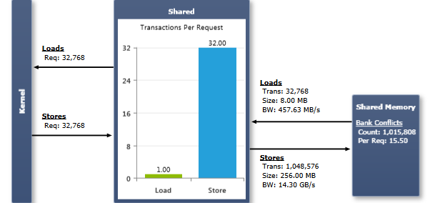

block 内的线程可以通过共享内存共享数据来协作，并通过同步执行来协调内存访问。由于位于片上，共享内存的带宽远高于本地或全局内存，延迟也低得多。在这一点上，共享内存相当于一个用户管理的缓存：由应用程序显式分配并访问。一种典型的编程模式是：将来自设备内存的数据暂存到共享内存中，在共享内存中处理数据并在 block 的各线程之间共享数据视图，然后将结果写回设备内存。
为了实现高带宽，共享内存被划分为大小相等的内存模块（称为 bank），可以同时访问。任意由 n 个地址组成、分别落在 n 个不同 bank 上的内存读或写请求，因而可以被同时服务，整体带宽为单个模块带宽的 n 倍。但是，如果一个内存请求的两个地址落在同一个 bank 中，就会产生 bank 冲突，访问必须被串行化。硬件会把一个存在 bank 冲突的内存请求拆分为所需数量的多个互不冲突的独立请求，吞吐量也按拆分后的请求数下降同样倍数。若拆分后的独立内存请求数为 n，则称该初始内存请求引发了 n 路 bank 冲突。为获得最佳性能，理解内存地址如何映射到 bank、以便调度访问以最小化 bank 冲突非常重要。
对于计算能力 2.x 的设备，共享内存有 32 个 bank，其组织方式是连续的 32 位字映射到连续的 bank 上。每个 bank 的带宽为每两个时钟周期 32 位。当 warp 中两个线程访问同一个 32 位字内的任意地址时，共享内存请求不会在它们之间产生 bank 冲突（即便两个地址落在同一 bank 中）。关于常见访问模式的更多细节和示例，参见 CUDA C Programming Guide 中针对计算能力 2.x 的 Shared Memory 章节。
对于计算能力 3.x 的设备，共享内存有 32 个 bank，并提供两种可通过 cudaDeviceSetSharedMemConfig() 配置的寻址模式。每个 bank 的带宽为每个时钟周期 64 位。在 64 位模式下，连续的 64 位字映射到连续的 bank 上。当 warp 中两个线程访问同一个 64 位字内的任意子字时，共享内存请求不会在它们之间产生 bank 冲突（即便这两个子字的地址落在同一 bank 中）。在 32 位模式（默认）下，连续的 32 位字映射到连续的 bank 上。当 warp 中两个线程访问同一个 32 位字内的任意子字，或访问处于同一 64 字对齐段（即首索引为 64 的倍数的段）内、且索引 i 和 j 满足 j=i+32 的两个 32 位字内的任意子字时，共享内存请求不会在它们之间产生 bank 冲突（即便这两个子字的地址落在同一 bank 中）。关于常见访问模式的更多细节和示例，参见 CUDA C Programming Guide 中针对计算能力 3.x 的 Shared Memory 章节。
图表 Load/Store Requests（请求数）等于执行的共享内存指令数量。当 warp 执行一条访问共享内存的指令时，会按前述方式解决 bank 冲突。每次 bank 冲突都会强制产生一次新的内存事务。需要的事务越多，除了线程访问的字以外还要额外传输的未使用字也越多，相应地降低了指令吞吐量。每个内存事务都要求该汇编指令再次发射；如果完成一个 warp 的请求需要多于一个事务，就会导致指令重放。关于指令重放及其性能影响的更多细节，可参阅 指令统计 实验中的相关介绍。 Transactions Per Request（每请求事务数）图表分别针对加载和存储操作，显示每条执行的共享内存指令所需的平均共享内存事务数。数值越低越好；对于一个完整 warp 的单次共享内存操作，目标是 4 字节访问和 8 字节访问都为 1 个事务，16 字节访问为 2 个事务。注意，对于给定的访问模式，理想事务数取决于访问宽度、所配置的地址模式（如果可用）以及目标计算能力。可参考 内存事务 实验中的 Ideal Shared Memory Transactions，以了解某条指令可能的最低传输次数。共享内存流量的 Transaction Size（事务大小）在计算能力 2.x 上为 128 字节，在计算能力 3.x 上为 256 字节。对于这两类设备，带宽都相当于每个 SM 每时钟周期一个事务。 |
NVIDIA GameWorks Documentation Rev. 1.0.150630 ©2015. NVIDIA Corporation. All Rights Reserved.